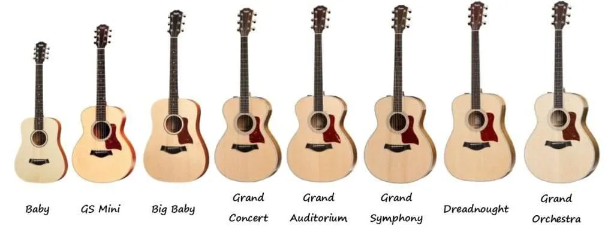

La música es una forma de expresión artística que consiste en la combinación de sonidos vocales o instrumentales, conforme a estándares culturales de ritmo y melodía. La música es una de las más antiguas formas de arte y ha estado presente, de diferentes maneras, en prácticamente todas las culturas humanas. Se puede crear con fines estéticos, recreativos, ceremoniales, terapéuticos o de comunicación.